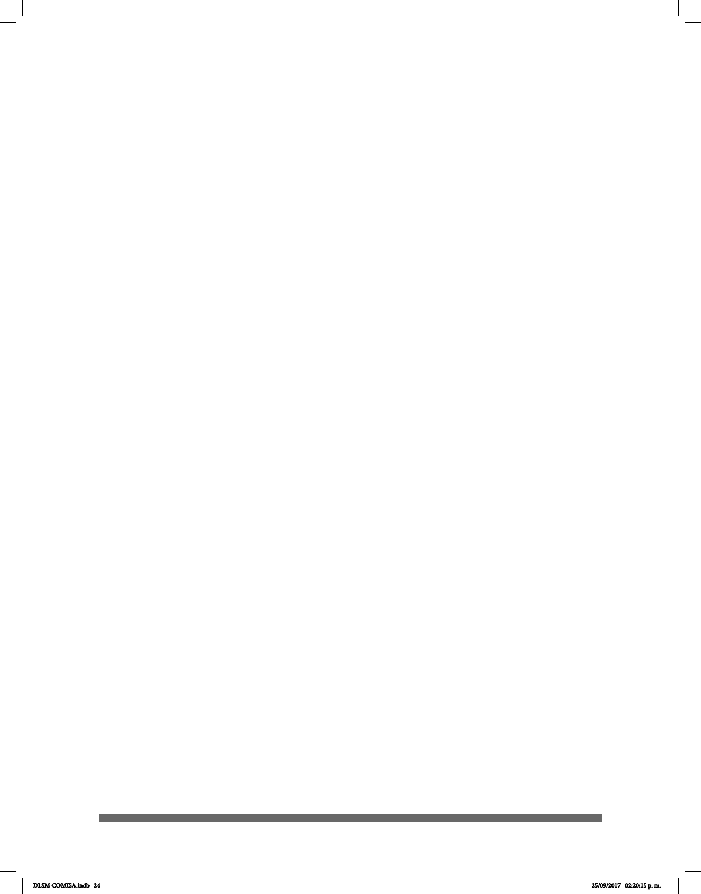

24
Cabe mencionar que entre los compendios léxicos de lenguas de señas existe
otro tipo de orden como aquellos que están regidos por zonas de articulación o por
campos semánticos; sin embargo, la elección del orden por conguraciones manuales
ha sido benéca para que los usuarios de la LSM reconozcan los recursos que su lengua
materna ofrece.
Tercera fase.- Análisis de datos. Se organizaron todos los datos, es decir, las señas
obtenidas de las conguraciones manuales propuestas y recopiladas. Posteriormente
se incluyó a la ilustración de las señas la descripción de su realización y el signicado
que conlleva.
Cuarta fase.- Presentación y discusión de los resultados. En esta fase se realizó la
revisión de las señas recopiladas, además del análisis minucioso de los videos y de los
fotogramas extraídos para cotejar su pertinencia y precisión.
Quinta fase.- Documentación. En esta etapa nal se documentaron los resultados del
proyecto para su publicación y su distribución física gratuita, así como su alojamiento
en la web para su mayor difusión, contribuyendo a la accesibilidad de las personas
sordas en nuestro país.
Vale la pena señalar que el léxico de señas en el diccionario no depende del
español y su estructura no se basa en la equivalencia de palabra-seña. No hay
correspondencia entre las dos lenguas (español y LSM) ya que la composición
léxica y gramatical de cada una es distinta. Asimismo, no todas las palabras en español
tienen señas equivalentes, del mismo modo que no todas las señas de la LSM las
tienen en el primero. En la LSM, como en otras lenguas, las palabras pueden necesitar ser
traducidas por circunloquios, paráfrasis o viceversa, donde no hay ninguna
correspondencia seña/palabra especíca para explicar el signicado como se
ilustra en algunos casos. Algunas señas pueden parecer similares, pero tienen diferente
signicado y se utilizan de manera distinta.
Este primer Diccionario de la Lengua de Señas Mexicana en la Ciudad de
México contiene más de 1,000 señas recolectadas de diferentes informantes que
utilizan esta lengua en un contexto natural y que, además, son miembros de
alguna Comunidad Sorda establecida en la Ciudad de México. Esto excluye a las
señas que dependen directamente del español, las cuales forman parte de un sistema de
comunicación educativo diseñado para presentar visualmente el español conocido
como español señado. Las señas de este sistema comunicativo nunca se producen en
la comunicación natural de las personas sordas.
Los diccionarios de lenguas de señas son guías bilingües para señar palabras o frases
de lenguas orales, por lo que no deben ser consultados para comprobar la denición
o el origen de las señas; para esto se utilizan los diccionarios de lengua u otras obras
especializadas. La estructura del Diccionario de Lengua de Señas Mexicana en la
Ciudad de México, a diferencia de los publicados anteriormente, fue consensuada por
DLSM COMISA.indb 24 25/09/2017 02:20:15 p. m.